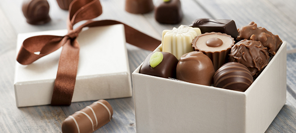

Assorted chocolate facts
Here are some assorted chocolate facts for your enjoyment. Please note, this reading is best enjoyed with a mouth-full of chocolate.
On average, consumers in the United States will eat 12 lbs. of chocolate per year.
Scientists are rumored to have extracted theobromine, a brain activity stimulant, from chocolate to insert into Coca Cola.
Chocolate is argued to have an inherent ability to fight heart disease due to high levels of phenol, according to a study carried out by the University of California.
Milton Hershey, of chocolate bar fame is rumored to have made more than $60 million at the turn of the century before donating all of his money to a home for orphans.
The source of chocolate is the cacao tree. The cacao tree is an indigenous evergreen found in Latin America on which flowers grow from the trunk. Some of the flowers blossom to bear fruit. The fruit is a tint of red/yellow, and a shape of a large melon. The seeds within the melon are extracted, then dried out and fermented through a sunning process. Manufacturers process the remaining substance and create what we know as chocolate.
It is widely believed that Ancient Mayan people mixed chilies and vanilla with hot chocolate drinks. Before the Mayans, the Olmecs used chocolate. The Olmecs are thought to be the earliest consumers of the wonder food.
The Aztecs had a slightly different way of enjoying their chocolate drinks: at a cold temperature and stirred with honey. It was considered to be a fine drink for the affluent and powerful.
Christopher Columbus may not have been the first to discover Amercia, but he was the first European to discover chocolate. He captured a canoe operated by Mayan traders in the early 1500's. The canoe was carrying cacao beans which Columbus mistook for money or currency of some sort. Hey may have discovered them, but he didn't know what purpose they served.
The Spaniards gathered their knowledge of chocolate from the Aztec people. But they were innovative in their own right, being the first to mix hot water with cacao grinds. The combination of hot water with ground cacao, sapote kernels, maize, and seasonings was referred to as chocolatl. The word was derived from the Mayan term chocol (meaning "hot") and the Nahuatl word for "water", atl. The sweet chocolate that we know today was first created by the spanish people who flavored of their chocolate drinks with cane sugar, cinnamon, and anise.
So next time you enjoy a chocolate gift or a wonderful chocolate truffle remember that we owe a lot to the creativity of people in Latin America many years ago.
Please take time to browse our website if you would like to send chocolate to a friend or loved one.